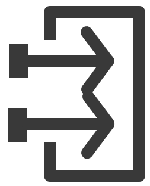
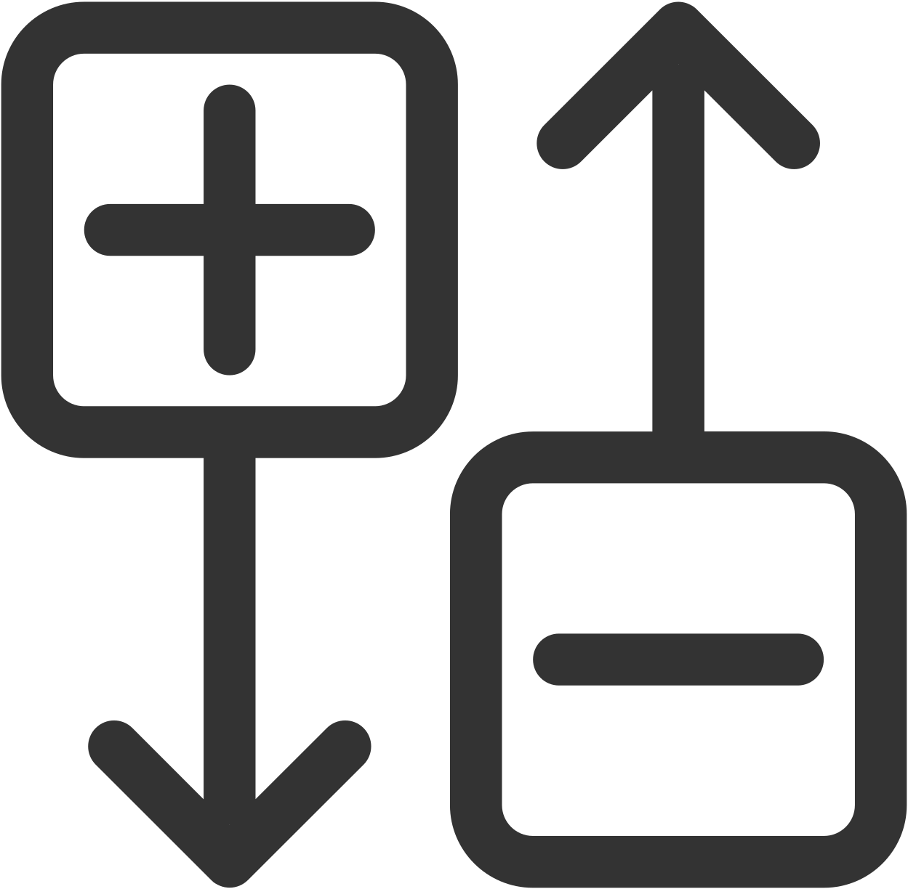

Symbolic Links Pad
The Symbolic Links pad lists the Symbolic Links contained in the project folder. To open the window click in the main menu bar. By default, it is positioned in the upper right corner.
Symbolic Links, also known as symlinks, enable the interlinking of individual process variables in a project.
Toolbar
|
Icon |
Function |
Description |
|---|---|---|
|
|
Filter output Symbolic Links |
Display only output Symbolic Links. |
|
 |
Filter input Symbolic Links |
Display only input Symbolic Links. |
|
|
Filter assigned Symbolic Links |
Display only assigned Symbolic Links. |
|
|
Filter unassigned Symbolic Links |
Display only unassigned Symbolic Links. |
|
|
Filter |
Enable the filtering of displayed list. Use * as prefix to filter for characters that are not at the beginning of the expression (e.g. *APP1., *FB1. etc.). A suffixed * is not necessary, because it is added implicitly).
NOTE: The filter works for all columns simultaneously, for example, it shows matching results for Connected to column.
|
|
|
Filter the application |
Enable the filtering of individual applications. |
|
 |
Switch tree-/list view |
Switch between tree and list view. |
|
|
Update view |
Update the Symbolic Links view. Use this command if you are uncertain that the view is current. |
|
|
Show data types |
Displays or hides the data type of the Symbolic Link elements. |
|
|
Import |
Import Symbolic Links from a spreadsheet:
|
|
|
Export |
Export Symbolic Links to a spreadsheet:
|

Symbolic Link Name, Connection, and Type
Symbolic Link Name lists the existing Symbolic Links, depending on the currently used filter adjustment. These entries can be assigned directly to a hardware port within the HW Configurator.
Connected to lists the hardware ports, if the respective variable is already connected to a hardware port (also depending on the currently used filter adjustment).
Type. If the Show data types button is pressed, lists the data type of the Symbolic Links and, if the corresponding variable is connected to a hardware port, the data type of the hardware port.
Context Menu
Right-click on a Symbolic Link item to open the context menu:
|
Icon |
Function |
Description |
|---|---|---|
|
|
Remove |
Remove the Symbolic Link connection, that is, the connection to the hardware port. The Connected to column is empty now and can be reconnected with a hardware port (see Symbolic Links, HW Configurator). |
|
|
Add Watch |
Set a watch point on the ports of the Symbolic Link connection. A sub menu opens to define where the watch point is set (see below). To enable this function, the project must be loaded on a controller and EcoStruxure Automation Expert - Buildtime logged in to the controllero so that a connection to the watch server exists. Login is performed in the Deploy and Diagnostic editor via . |
|
> Source |
Set a watch point at the source of the Symbolic Link connection. |
|
|
> Destination |
Set a watch point at the destination of the Symbolic Link connection. |